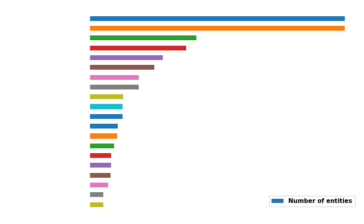

    <!-- Dataset Section -->
    <section id="leak" class="content-section text-center">
        <div class="leak">
			<div class="container">
				<div class="col-lg-8 col-lg-offset-2">
					<h2>One Dataset to rule them all.</h2>
					<p>The <a href="https://offshoreleaks.icij.org/pages/about"  target="_blank">databases</a> released by ICJC contain information on:</p>
					
					<ul style="text-align:justify;margin-bottom:2em">
					<li><b>The Offshore Leaks</b>: 130 000 offshore accounts disclosed in a report (2013).</li>
					<li><b>The Panamas Papers</b>: 214 000 offshore accounts from <i>Mossack Fonseca</i>, as presented above (2016)</li>
					<li><b>The Bahamas Leaks</b>: 1.3 million internal files from the company register of the Bahamas (2016)</li>
					<li><b>The Paradise Papers</b>: 13.4 millions electronic documents relating to offshore investments (2017)</li>
					</ul>
					
					<p>This database is powered by <i>Neo4j</i>, a graph database that structures data in nodes and relationships. The <a href="https://offshoreleaks.icij.org/pages/faq#terms_definition"  target="_blank">data</a> was downloaded as several CSV files, one for each actor and one for the link between them. The different nodes represent:</p>
					
					<ul style="text-align:justify;margin-bottom:2em">
					<li><b>The offshore entity</b>: a company created in a low-tax jurisdiction that often attracts non-resident client through preferential tax treatment</li>
					<li><b>The officer</b>: a person or company who play a role in an offshore entity</li>
					<li><b>The intermediary</b>: a go-between for someone seeking an offshore corporation and an offshore service provider (usually a law firm)</li>
					<li><b>The address</b>: contact postal address as it appears in the original database</li>
					</ul>
					
					<p>In total, this database contains information about more than 785 000 offshore entities and links to people and companies in more than 200 countries. Note these data come from leaked records and not a standardized corporate registry which could lead to duplicated entries (ICIJ did not merge records with similar names).</p>

					<p>No cleaning or standardization were necessary, except for some entity names in the Panama Papers data to split the current from the former name of the company (see ICIJ site for more details).</p>

					<p>Before investigating among the charities, we can explore the dataset and the offshore companies the have a more general view of the situation. We were particularly interested with the Panamas Papers dataset. How were distributed the offshore companies across the world? How many countries sheltered these 200 000 companies?</p>

					<p>We were not surprised to see that majority of our entities were localized in a small number of countries. Indeed more than 50% of the countries quoted in the dataset contain only a few number of offshore companies ( < 1000).</p>
					
					
					
					<p style="text-align:justify;margin-top:2em">We were surprised to find the United Kingdom in the top 5, but after investigation it appears that UK was strongly appreciated by entrepreneurs and companies for his status of UK non-domicilied that enable to avoid taxes on foreign income.</p>

					<p>In conclusion, there was no particular surprise with this top 20 since every members are well-known tax heavens leading to a non-uniform geographic distribution:</p>
					
					<div align="center">
					<iframe src="../img/panama_offshore_entities.html"
					width="960px"
					height="600px"
					></iframe>
					</div>

					<p style="text-align:justify;margin-top:2em"> But let's now take a closer look on our charities! How can we distinguish between real charities and shell companies? We needed first to find these charities in the database. Since no detail was given in the set about the possible function of the different companies, we needed external data.</p>
					
					<p>We chose to use Forbes Magazine's list of the top 100 richest US charities, the list of main non-governmental organizations and the list of main charities on Wikipedia. We scraped this data in order to form a new database of well-known charities. By merging together these results we obtained detailed information on more than 300 charities that we could use to investigate the ICIJ database. Details about charities we found include the name of the charities, the name of its main leaders, the headquarters address and the location of major offices. Note that the available data varies from charity to charity, resulting in a sometime sparse dataset.</p>

					<p>We decided to isolate potential charities in the panama papers by their name to compare them with our newly constructed dataset of charities using text mining. We took as charities the offshore companies that have a certain percentage of significative words in common with the real charities. Using this method, we reduced the dataset from hundreds of thousands of nodes to a few hundred matches.</p>

					<p>Considering the small number of matches and since human possess an expertise in natural language processing superior to any training tool, we inspected and corrected the potential matches manually.</p>

					<p>Among the matches, we found Amnesty International, the Red Cross and many other of the world's biggest aid agencies. But as said earlier, some shell companies were named after charities with which they had no connection.</p>
				</div>
			</div>
		</div>
    </section>
